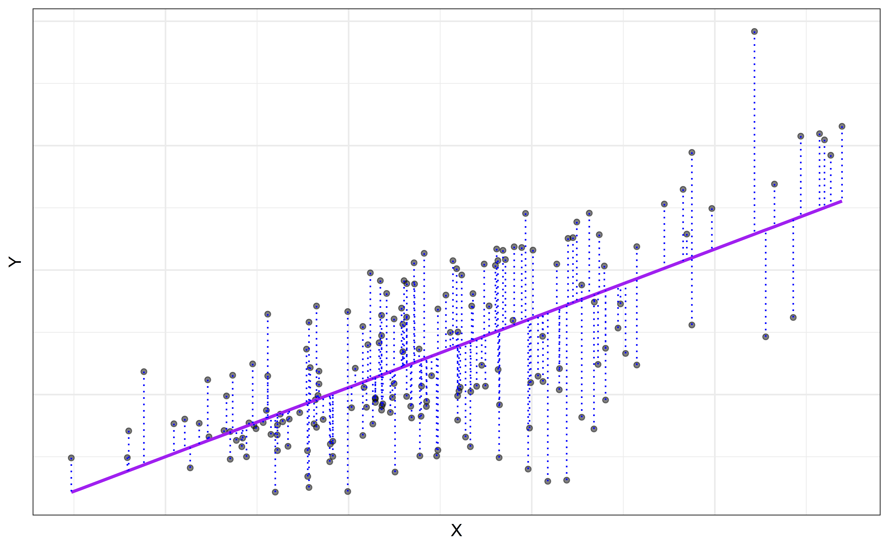
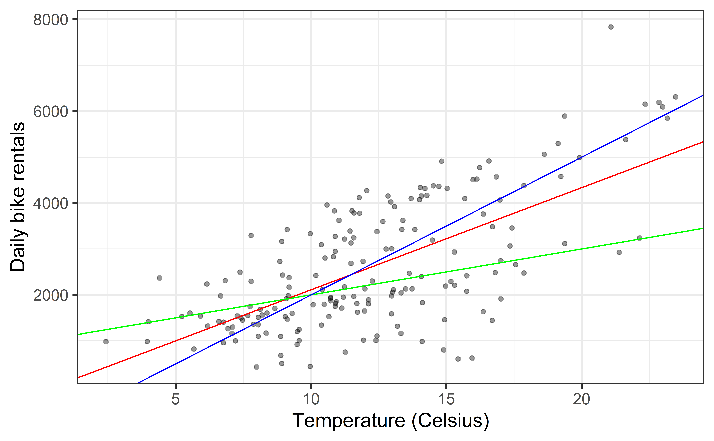
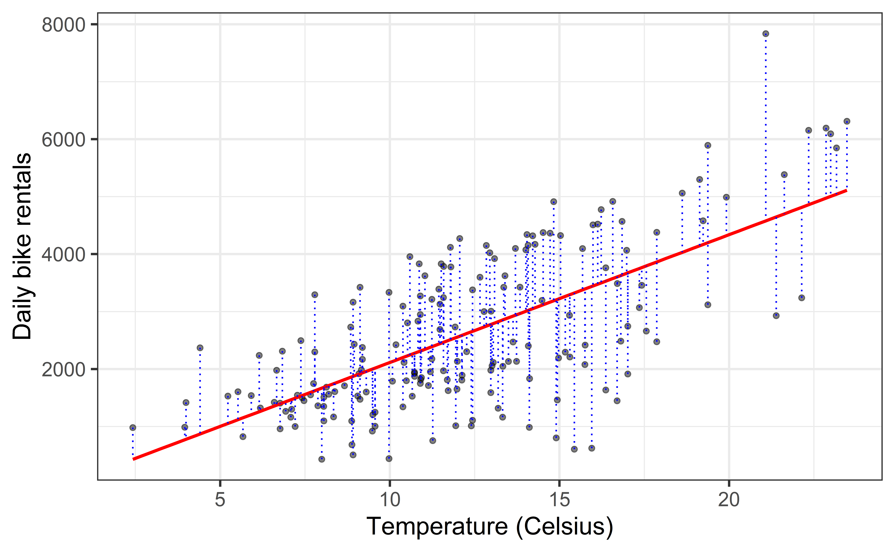

# load packages
library(tidyverse) # for data wrangling
library(ggformula) # for plotting
library(broom) # for formatting model output
library(knitr) # for formatting tables
# set default theme and larger font size for ggplot2
ggplot2::theme_set(ggplot2::theme_bw(base_size = 16))
# set default figure parameters for knitr
knitr::opts_chunk$set(
fig.width = 8,
fig.asp = 0.618,
fig.retina = 3,
dpi = 300,
out.width = "80%"
)Simple Linear Regression
Prof. Eric Friedlander
Application exercise
Complete Exercises 0 and 1.
Introduction to Simple Linear Regression
Topics
Use simple linear regression to describe the relationship between a quantitative predictor and quantitative response variable.
Estimate the slope and intercept of the regression line using the least squares method.
Interpret the slope and intercept of the regression line.
Use R to fit and summarize regression models.
Computation set up
Data
DC Bikeshare
Our data set contains daily rentals from the Capital Bikeshare in Washington, DC in 2011 and 2012. It was obtained from the dcbikeshare data set in the dsbox R package.
We will focus on the following variables in the analysis:
count: total bike rentalstemp_orig: Temperature in degrees Celsiusseason: 1 - winter, 2 - spring, 3 - summer, 4 - fall
Click here for the full list of variables and definitions.
Let’s complete Exercises 2-6 together
Data prep
- Exercise 2: Recode
seasonas a factor with names instead of numbers (livecode) - Remember:
- Think of
|>as “and then” mutatecreates new columns and changes (mutates) existing columns- R calls categorical data “factors”
- Think of
Exploratory data analysis (Exercise 3)

Exploratory data analysis (Exercise 3)

More data prep
- (Exercise 5) Filter your data for the season with the strongest relationship and give the resulting data set a new name
Rentals vs Temperature
Goal: Fit a line to describe the relationship between the temperature and the number of rentals in winter.

Why fit a line?
We fit a line to accomplish one or both of the following:
Prediction
How many rentals are expected when it’s 10 degrees out?
Inference
Is temperature a useful predictor of the number of rentals? By how much is the number of rentals expected to change for each degree Celsius?
Population vs. Sample
Population: The set of items or events that you’re interested in and hoping (able) to generalize the results of your analysis to.
Sample: The set of items that you have data for.
Representative Sample: A sample that looks like a small version of your population.
Goal: Build a model from your sample which generalizes to your population.
Terminology
Response, Y: variable describing the outcome of interest
Predictor, X: variable we use to help understand the variability in the response

Regression model
Regression model: a function that describes the relationship between a quantitative response, \(Y\), and the predictor, \(X\) (or many predictors).
\[\begin{aligned} Y &= \color{black}{\textbf{Model}} + \text{Error} \\[8pt] &= \color{black}{\mathbf{f(X)}} + \epsilon \\[8pt] &= \color{black}{\boldsymbol{\mu_{Y|X}}} + \epsilon \end{aligned}\]Regression model
\[\begin{aligned} Y &= \color{purple}{\textbf{Model}} + \text{Error} \\[8pt]
&= \color{purple}{\mathbf{f(X)}} + \epsilon \\[8pt]
&= \color{purple}{\boldsymbol{\mu_{Y|X}}} + \epsilon \end{aligned}\]

\(\mu_{Y|X}\) is the mean value of \(Y\) given a particular value of \(X\).
Regression model
\[ \begin{aligned} Y &= \color{purple}{\textbf{Model}} + \color{blue}{\textbf{Error}} \\[5pt] &= \color{purple}{\mathbf{f(X)}} + \color{blue}{\boldsymbol{\epsilon}} \\[5pt] &= \color{purple}{\boldsymbol{\mu_{Y|X}}} + \color{blue}{\boldsymbol{\epsilon}} \\[5pt] \end{aligned} \]

Simple linear regression (SLR)
SLR: Statistical model
- Simple linear regression: model to describe the relationship between \(Y\) and \(X\) where:
- \(Y\) is a quantitative/numerical response
- \(X\) is a single quantitative predictor
- \[\Large{Y = \mathbf{\beta_0 + \beta_1 X} + \epsilon}\]
- \(\beta_1\): True slope of the relationship between \(X\) and \(Y\)
- \(\beta_0\): True intercept of the relationship between \(X\) and \(Y\)
- \(\epsilon\): Error
SLR: Regression equation
\[\Large{\hat{Y} = \hat{\beta}_0 + \hat{\beta}_1 X}\]
- \(\hat{\beta}_1\): Estimated slope of the relationship between \(X\) and \(Y\)
- \(\hat{\beta}_0\): Estimated intercept of the relationship between \(X\) and \(Y\)
- \(\hat{Y}\): Predicted value of \(Y\) for a given \(X\)
- No error term!
Choosing values for \(\hat{\beta}_1\) and \(\hat{\beta}_0\)
Residuals
\[\text{residual} = \text{observed} - \text{predicted} = y_i - \hat{y}_i\]
Least squares line
- Residual for the \(i^{th}\) observation:
\[e_i = \text{observed} - \text{predicted} = y_i - \hat{y}_i\]
- Sum of squared residuals:
\[e^2_1 + e^2_2 + \dots + e^2_n\]
- Least squares line is the one that minimizes the sum of squared residuals
Slope and intercept
Properties of least squares regression
Passes through center of mass point, the coordinates corresponding to average \(X\) and average \(Y\): \(\hat{\beta}_0 = \bar{Y} - \hat{\beta}_1\bar{X}\)
Slope has same sign as the correlation coefficient: \(\hat{\beta}_1 = r \frac{s_Y}{s_X}\)
- \(r\): correlation coefficient
- \(s_Y, s_X\): sample standard deviations of \(X\) and \(Y\)
Sum of the residuals is zero: \(\sum_{i = 1}^n e_i \approx 0\)
- Intuition: Residuals are “balanced”
The residuals and \(X\) values are uncorrelated
Estimating the slope
\[\large{\hat{\beta}_1 = r \frac{s_Y}{s_X}}\]
\[\begin{aligned}
s_X &= 4.2121 \\
s_Y &= 1399.942 \\
r &= 0.6692
\end{aligned}\]
\[\begin{aligned}
\hat{\beta}_1 &= 0.6692 \times \frac{1399.942}{4.2121} \\
&= 222.417\end{aligned}\]
Click here for details on deriving the equations for slope and intercept which is easy if you know multivariate calculus.
Estimating the intercept
\[\large{\hat{\beta}_0 = \bar{Y} - \hat{\beta}_1\bar{X}}\]
\[\begin{aligned}
&\bar{x} = 12.2076 \\
&\bar{y} = 2604.133 \\
&\hat{\beta}_1 = 222.4167
\end{aligned}\]
\[\begin{aligned}\hat{\beta}_0 &= 2604.133 - 222.4167 \times 12.2076 \\
&= -111.0411
\end{aligned}\]
Click here for details on deriving the equations for slope and intercept.
Interpretation
- Slope: For each additional unit of \(X\) we expect the \(Y\) to increase by \(\hat{\beta}_1\), on average.
- Intercept: If \(X\) were 0, we predict \(Y\) to be \(\hat{\beta}_0\)
Does it make sense to interpret the intercept?
✅ The intercept is meaningful in the context of the data if
the predictor can feasibly take values equal to or near zero, or
there are values near zero in the observed data.
🛑 Otherwise, the intercept may not be meaningful!
Estimating the regression line in R
- Let’s complete Exercises 7-11
Fit model & estimate parameters
Look at the regression output
Call:
lm(formula = count ~ temp_orig, data = winter)
Coefficients:
(Intercept) temp_orig
-111.0 222.4 \[\widehat{\text{count}} = -111.0 + 222.4 \times \text{temp_orig}\]
Note: The intercept is off by a tiny bit from the hand-calculated intercept, this is just due to rounding in the hand calculation.
The regression output
We’ll focus on the first column for now…
Format output with kable
Use the kable function from the knitr package to produce a table and specify number of significant digits
Visualize Model

Prediction
Our Model
\[\begin{aligned} \widehat{Y} &= -111.0 + 222.4 \times X\\ \widehat{\text{count}} &= -111.0 + 222.4 \times \text{temp_orig} \end{aligned}\]Making a prediction
Suppose that it’s 15 degrees Celsius outside. According to this model, how many bike rentals should we expect if it’s winter?
\[\begin{aligned} \widehat{\text{count}} &= -111.0 + 222.4 \times \text{temp_orig} \\ &= -111.0 + 222.4 \times 15 \\ &= 3225 \end{aligned}\]Prediction in R
# create a data frame for a new temperature
new_day <- tibble(temp_orig = 15)
# predict the outcome for a new day
predict(winter_fit, new_day) 1
3225.195 Complete Exercises 12-13.
Recap
Used simple linear regression to describe the relationship between a quantitative predictor and quantitative response variable.
Used the least squares method to estimate the slope and intercept.
Interpreted the slope and intercept.
- Slope: For every one unit increase in \(x\), we expect y to change by \(\hat{\beta}_1\) units, on average.
- Intercept: If \(x\) is 0, then we expect \(y\) to be \(\hat{\beta}_0\) units
Predicted the response given a value of the predictor variable.
Used
lmand thebroompackage to fit and summarize regression models in R.